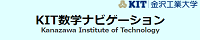

金沢工業大学が送る 役立つホームページたちをご紹介
| リンク先 | サイトの簡単な解説 |
|---|---|
| 金沢工業大学のホームページです． | |
| 金沢工業大学 数理工教育研究センターのホームページです． | |
|  | KIT数学ナビゲーションのホームページです． 高校数学と大学1,2年次に学ぶ数学の内容を分かりやすく解説． |
リンクについて
当ページのリンクはフリーです．
リンクの際はトップページである(http://www2.kanazawa-it.ac.jp/rikogaku/) からお願いいたします．
リンク時のバナー画像は
 をお使いください．
をお使いください．